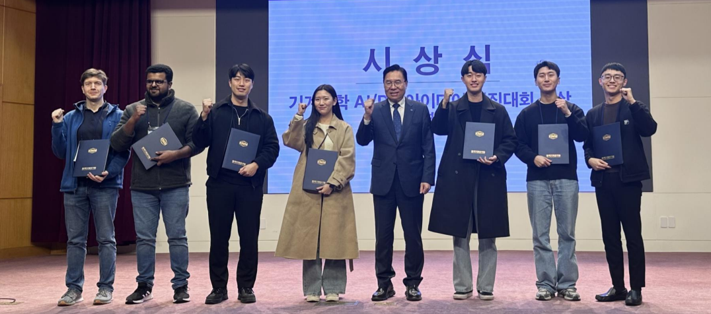
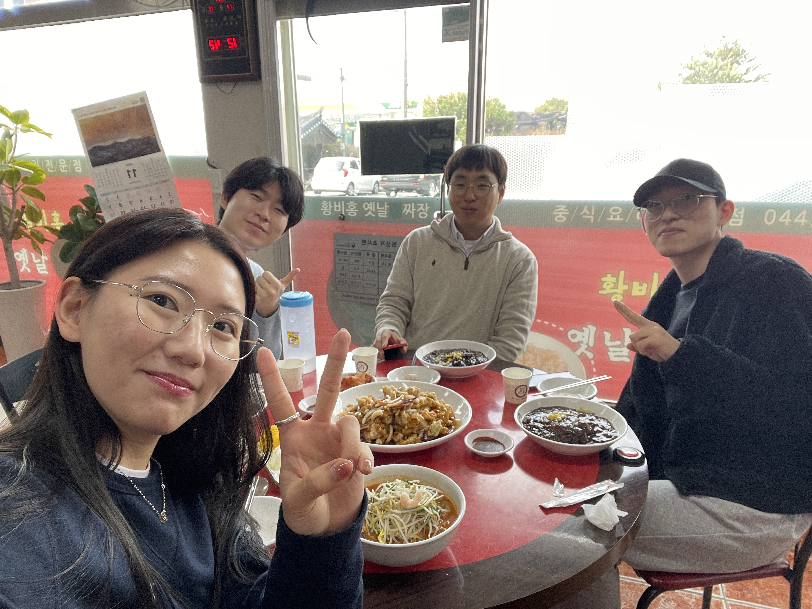
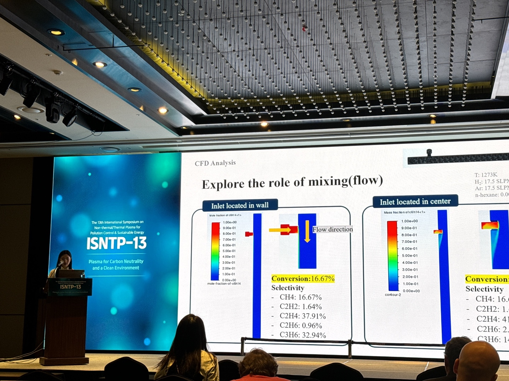
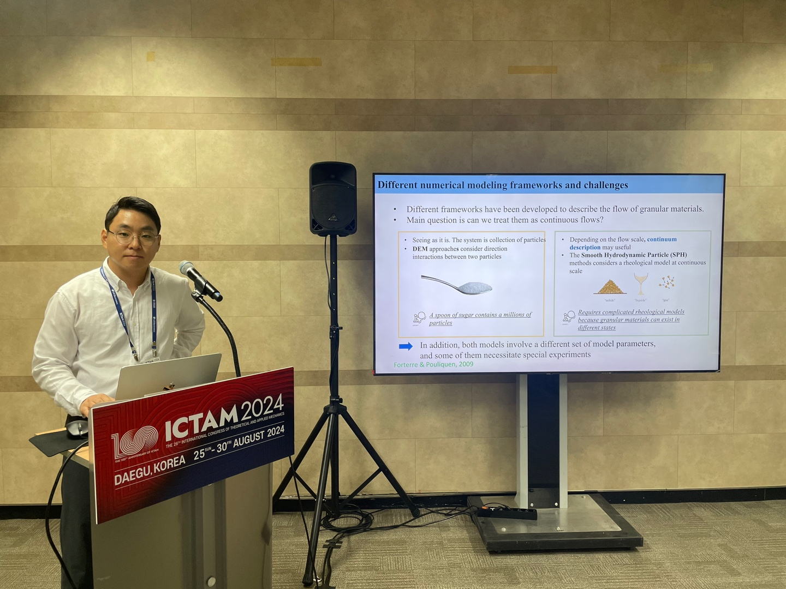

Subin and Jihun won the Encouragement Award at the AI/DX Competition hosted by the Korea Institute of Machinery and Materials., 21th Nov., 2024

Group Lunch, 14th Nov., 2024

Subin presented at the 13th International Symposium on Non-thermal/Thermal Plasma for Pollution Control & Sustainable Energy. Congratulations on her academic debut!

Prof. Kim gave a talk in International Congress of Theoretical and Applied Mechanics at Daegue in 2024.
